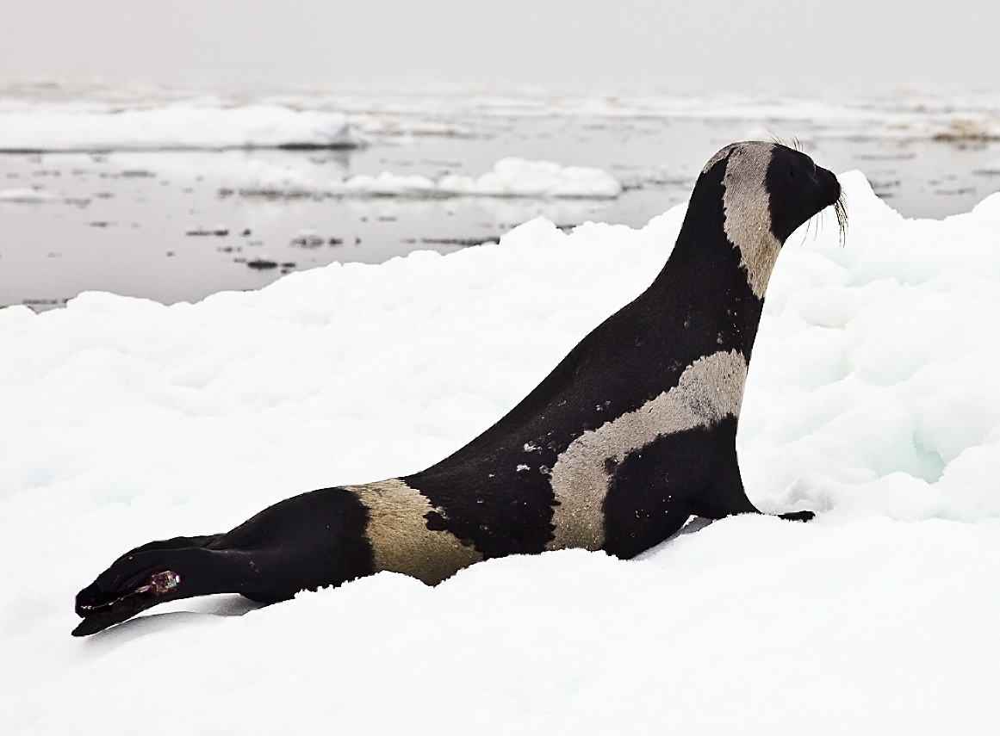
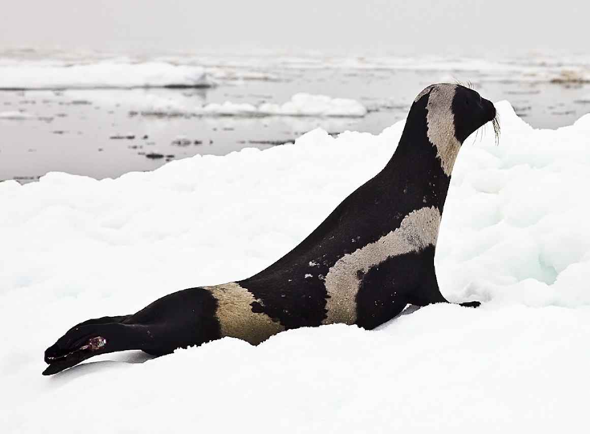

What Exactly is a Ribbon Seal?
Ribbon seals are a type of seal that can be very easy to spot due to their striking, "ribbon-like" markings. Each ribbon seal is patterned with four white ribbons. One of them wraps around the neck, others wrap around each of the front flippers, and one wraps around the seal just before the back flipper. Even though all ribbon seals have similar markings, making them easy to distinguish, the females males have different coloring. The female ribbon seals are dark brown with white ribbons, while the male ribbon seals are black with white ribbons. Ribbon seals are quite large, typically weighing in around 175 pounds and are on average, 5 feet in length. Clearly ribbon seals are a unique and adorable animal, but they are sadly endangered.


 

Where Can You Find Them?
The ribbon seal is one of nine species of ice seals inhabiting the Arctic and is the only species in the genus Histriophoca. They inhabit the North Pacific Ocean. They can be found off the southern coast of Russia and to the north of Korea and Japan. Similar to other seals, ribbon seals are found along coasts or in the water in areas with cold climates.
Conservation
Ribbon seals are a part of the endangered species list. The most recent estimate that was done for the Bering Sea population of ribbon seals was about 100,000 - 110,000 seals. Ribbon seals are endangered mainly due to changes in the climate that could melt icebergs, making less space for the ribbon seals to live. Ribbon seals can also affected be commercial fishing in places like the Bering Sea. Oil and gas extraction can cause spills and intense pollution, further cutting down the already low ribbon seal population.
Clearly ribbon seals have a lot of things forcing them onto the endangered species list, but there is a way for everyone to help. Since the main issues all are based around the central topic of water pollution and general air pollution, it is important that all people are mindful of the ways they contribute to pollution. We must do the simple things to prevent pollution like using less energy by turning off lights in rooms when you are not in them, avoiding idling your car for long periods of time, and choosing environmentally friendly cleaners/products. For more information on ways to prevent pollution, visit NHDES.